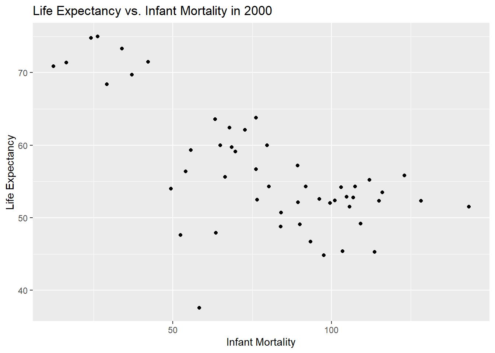
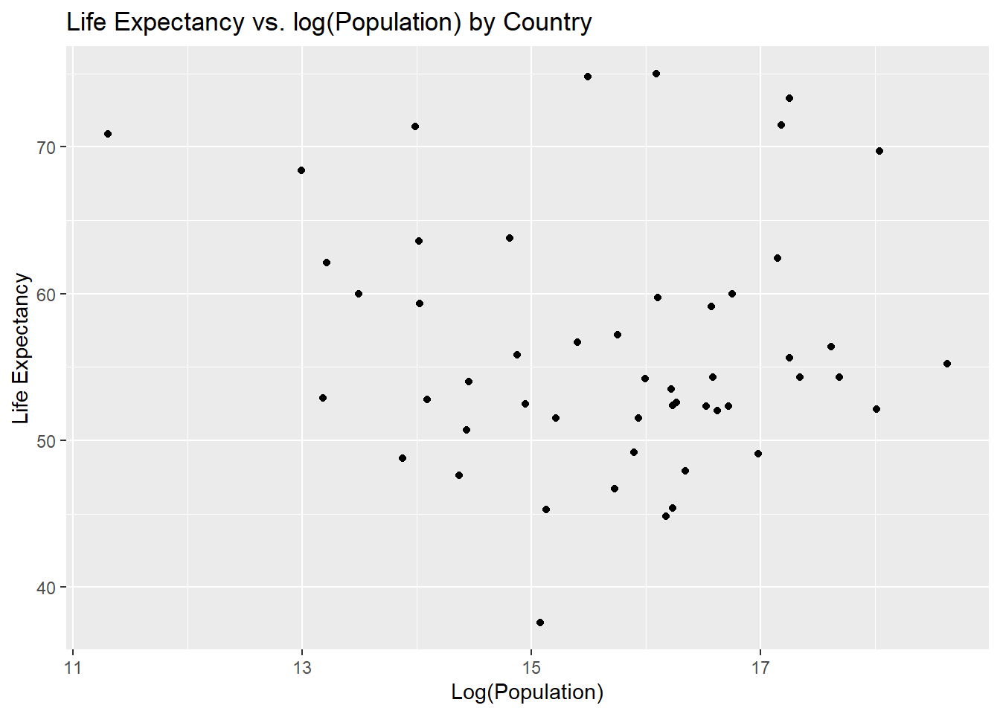
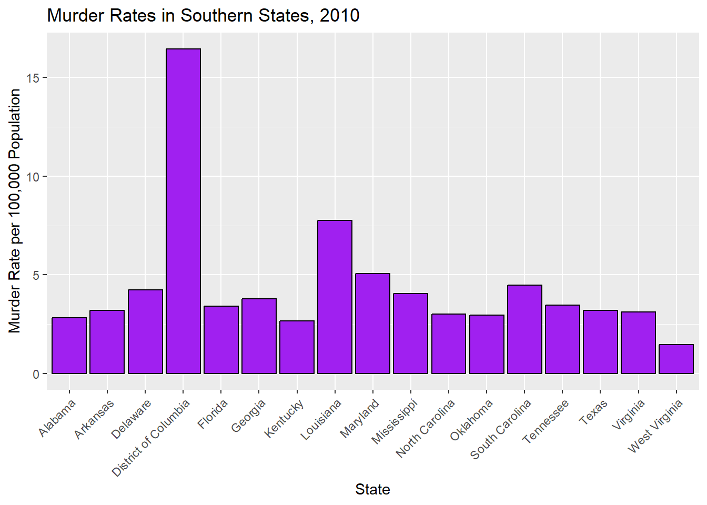
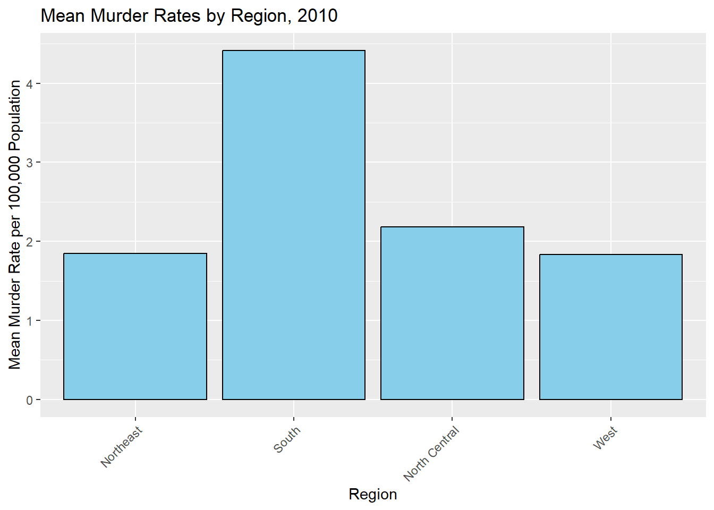

Today I will practice coding by working with the gapminder data from the dslabs package. First I will load the packages that I need by using the library() function.
Setting up the packages
library(dslabs)library(tidyverse)
── Attaching core tidyverse packages ──────────────────────── tidyverse 2.0.0 ──
✔ dplyr 1.1.4 ✔ readr 2.1.4
✔ forcats 1.0.0 ✔ stringr 1.5.1
✔ ggplot2 3.4.4 ✔ tibble 3.2.1
✔ lubridate 1.9.3 ✔ tidyr 1.3.0
✔ purrr 1.0.2
── Conflicts ────────────────────────────────────────── tidyverse_conflicts() ──
✖ dplyr::filter() masks stats::filter()
✖ dplyr::lag() masks stats::lag()
ℹ Use the conflicted package (<http://conflicted.r-lib.org/>) to force all conflicts to become errors
library(ggplot2)library(dplyr)
Data Exploration
Exploring gapminder dataframe
help(gapminder) ## Viewing help file from gapminder
starting httpd help server ... done
str(gapminder) ## Viewing the structure of gapminder
'data.frame': 10545 obs. of 9 variables:
$ country : Factor w/ 185 levels "Albania","Algeria",..: 1 2 3 4 5 6 7 8 9 10 ...
$ year : int 1960 1960 1960 1960 1960 1960 1960 1960 1960 1960 ...
$ infant_mortality: num 115.4 148.2 208 NA 59.9 ...
$ life_expectancy : num 62.9 47.5 36 63 65.4 ...
$ fertility : num 6.19 7.65 7.32 4.43 3.11 4.55 4.82 3.45 2.7 5.57 ...
$ population : num 1636054 11124892 5270844 54681 20619075 ...
$ gdp : num NA 1.38e+10 NA NA 1.08e+11 ...
$ continent : Factor w/ 5 levels "Africa","Americas",..: 4 1 1 2 2 3 2 5 4 3 ...
$ region : Factor w/ 22 levels "Australia and New Zealand",..: 19 11 10 2 15 21 2 1 22 21 ...
summary(gapminder) ## Viewing the data summary statistics of gapminder data
country year infant_mortality life_expectancy
Albania : 57 Min. :1960 Min. : 1.50 Min. :13.20
Algeria : 57 1st Qu.:1974 1st Qu.: 16.00 1st Qu.:57.50
Angola : 57 Median :1988 Median : 41.50 Median :67.54
Antigua and Barbuda: 57 Mean :1988 Mean : 55.31 Mean :64.81
Argentina : 57 3rd Qu.:2002 3rd Qu.: 85.10 3rd Qu.:73.00
Armenia : 57 Max. :2016 Max. :276.90 Max. :83.90
(Other) :10203 NA's :1453
fertility population gdp continent
Min. :0.840 Min. :3.124e+04 Min. :4.040e+07 Africa :2907
1st Qu.:2.200 1st Qu.:1.333e+06 1st Qu.:1.846e+09 Americas:2052
Median :3.750 Median :5.009e+06 Median :7.794e+09 Asia :2679
Mean :4.084 Mean :2.701e+07 Mean :1.480e+11 Europe :2223
3rd Qu.:6.000 3rd Qu.:1.523e+07 3rd Qu.:5.540e+10 Oceania : 684
Max. :9.220 Max. :1.376e+09 Max. :1.174e+13
NA's :187 NA's :185 NA's :2972
region
Western Asia :1026
Eastern Africa : 912
Western Africa : 912
Caribbean : 741
South America : 684
Southern Europe: 684
(Other) :5586
class(gapminder) ## Determining the type of object gapminder is
[1] "data.frame"
Data Processing
Assign african countries to a variable called africa data
africadata <- gapminder %>%filter(continent =="Africa") ##I filter the data to only include data from Africa in the new object entitled africadatasummary(africadata)
country year infant_mortality life_expectancy
Algeria : 57 Min. :1960 Min. : 11.40 Min. :13.20
Angola : 57 1st Qu.:1974 1st Qu.: 62.20 1st Qu.:48.23
Benin : 57 Median :1988 Median : 93.40 Median :53.98
Botswana : 57 Mean :1988 Mean : 95.12 Mean :54.38
Burkina Faso: 57 3rd Qu.:2002 3rd Qu.:124.70 3rd Qu.:60.10
Burundi : 57 Max. :2016 Max. :237.40 Max. :77.60
(Other) :2565 NA's :226
fertility population gdp continent
Min. :1.500 Min. : 41538 Min. :4.659e+07 Africa :2907
1st Qu.:5.160 1st Qu.: 1605232 1st Qu.:8.373e+08 Americas: 0
Median :6.160 Median : 5570982 Median :2.448e+09 Asia : 0
Mean :5.851 Mean : 12235961 Mean :9.346e+09 Europe : 0
3rd Qu.:6.860 3rd Qu.: 13888152 3rd Qu.:6.552e+09 Oceania : 0
Max. :8.450 Max. :182201962 Max. :1.935e+11
NA's :51 NA's :51 NA's :637
region
Eastern Africa :912
Western Africa :912
Middle Africa :456
Northern Africa :342
Southern Africa :285
Australia and New Zealand: 0
(Other) : 0
The number of values is correct in the Summary data, so I will continue to creating new objects
Creating object containing infant_mortality and life_expectancy under d2
d2 <- africadata %>%select(life_expectancy, infant_mortality) ##I create an object from africadata that only includes the life expectancy and infant mortality from that object.summary(d2) ##I check to make sure that the object includes the two variables life expectancy and infant mortality only
life_expectancy infant_mortality
Min. :13.20 Min. : 11.40
1st Qu.:48.23 1st Qu.: 62.20
Median :53.98 Median : 93.40
Mean :54.38 Mean : 95.12
3rd Qu.:60.10 3rd Qu.:124.70
Max. :77.60 Max. :237.40
NA's :226
Creating object containing population and life_expectancy under d3
d3 <- africadata %>%select(life_expectancy, population) ##I make a new object from africadata that only includes the life expectancy and population variablessummary(d3) ##I check to confirm that the columns are correct
life_expectancy population
Min. :13.20 Min. : 41538
1st Qu.:48.23 1st Qu.: 1605232
Median :53.98 Median : 5570982
Mean :54.38 Mean : 12235961
3rd Qu.:60.10 3rd Qu.: 13888152
Max. :77.60 Max. :182201962
NA's :51
Plots
Plot life expectancy as a funciton of infant mortality
lifevim_plot <-ggplot(d2, aes(x = infant_mortality, y = life_expectancy)) +geom_point() +labs(title ="Life Expectancy vs. Infant Mortality",x ="Infant Mortality",y ="Life Expectancy") ## I use ggplot and the d2 object to plot infant mortality versus life expectancyprint(lifevim_plot) ## I print the plot below
Plot life expectancy as a function of populaiton size using ggplot2
lifevpop_plot <-ggplot(d3, aes(x =log(population), y = life_expectancy)) +geom_point() +labs(title ="Life Expectancy vs. log(Population)",x ="Log(Population)",y ="Life Expectancy") ## I use ggplot to plot the log of population as log(pop) versus life expectancyprint(lifevpop_plot) ## I print this plot
Looking at differences in life_expectancy versus infant_mortality by other variables
I begin by looking at differences in infant_morality and life_expectancy by country using the same plot, but with color.
lifevim_plot2 <-ggplot(africadata, aes(x = infant_mortality, y = life_expectancy, color = country)) +geom_point() +labs(title ="Life Expectancy vs. Infant Mortality",x ="Infant Mortality",y ="Life Expectancy") ##I make a plot using africadata because this includes country as well as infant mortality and life expectancyprint(lifevim_plot2) ## I print the plot to check it
There are multiple streaks of the same color, but on different linear planes. It seems that country is the determinant of infant mortality and life expectancy, so I do a faceted plot to show eahc individual country and confirm this.
lifevim_plot4 <-ggplot(africadata, aes(x = infant_mortality, y = life_expectancy)) +geom_point() +facet_wrap(~country) +labs(title ="Life Expectancy vs. Infant Mortality by Country",x ="Infant Mortality",y ="Life Expectancy") ## ChatGPT offered the facet_wrap function which separately plots the country variable by valueprint(lifevim_plot4)
With this plot, you can see that each country has a streat that decreases over time. The explaination for the streaks in the life expectancy versus infant mortality trends is that infant mortality differs by country, which leads life expectancy to also differ by African country. The rates change over the timeframe displayed.
Now, I will confirm that the life_expectancy and population streaks are also due to differeces in the country
lifevpop_plot2 <-ggplot(africadata, aes(x =log(population), y = life_expectancy, color = country)) +geom_point() +labs(title ="Life Expectancy vs. log(Population) by Country",x ="Log(Population)",y ="Life Expectancy")print(lifevpop_plot2)
Each country contains a different colored streak, confirming that life expectancy is positively related to population depending on each country. This is because the life expectancy differs for each country, resulting in different population sums, despite having a similar overall trend.
I will now examine differences in the plot by year to see if this differs by country. I first do this with the life expectancy versus infant mortality plot
lifevim_plot5 <-ggplot(africadata, aes(x = infant_mortality, y = life_expectancy, color = country)) +geom_point() +facet_grid(year ~ ., scales ="free_y") +labs(title ="Life Expectancy vs. Infant Mortality stratified by year and colored by country",x ="Infant Mortality",y ="Life Expectancy") ## Adding the year variable to the facet grid allow year to be seperated. ChatGPT suggested using scaled= free_y as to not make a seperate plot for eahc year, but display the differences on the same plotprint(lifevim_plot5)
With each line representing a year, it seems that the life expectancy moves upwards each year. I will now confirm that this is also the case for the life expectancy versus population.
lifevpop_plot3 <-ggplot(africadata, aes(x =log(population), y = life_expectancy, color = country)) +geom_point() +facet_grid(year ~ ., scales ="free_y") +labs(title ="Life Expectancy vs. log(Population) by Country",x ="Log(Population)",y ="Life Expectancy")print(lifevpop_plot3)
This upwards trend is displayed by country in this plot as well, confirming that the country and year impact the life expectancy-based trends.
Now I will use a code to find which years have missing values for infant mortality
missingvalues <-unique(africadata[!complete.cases(africadata$infant_mortality), "year"]) ## This shows which years in the variable are not complete cases (or are 0)print(missingvalues)
It seems that many years are missing between 1960-1981 and also in 2016.
Creating a new object for just the values with the year 2000
d4 <- africadata %>%filter(year ==2000) ## this will give me an object from africadata only including the data from 2000# Checking that the new object is correctstr(d4)
'data.frame': 51 obs. of 9 variables:
$ country : Factor w/ 185 levels "Albania","Algeria",..: 2 3 18 22 26 27 29 31 32 33 ...
$ year : int 2000 2000 2000 2000 2000 2000 2000 2000 2000 2000 ...
$ infant_mortality: num 33.9 128.3 89.3 52.4 96.2 ...
$ life_expectancy : num 73.3 52.3 57.2 47.6 52.6 46.7 54.3 68.4 45.3 51.5 ...
$ fertility : num 2.51 6.84 5.98 3.41 6.59 7.06 5.62 3.7 5.45 7.35 ...
$ population : num 31183658 15058638 6949366 1736579 11607944 ...
$ gdp : num 5.48e+10 9.13e+09 2.25e+09 5.63e+09 2.61e+09 ...
$ continent : Factor w/ 5 levels "Africa","Americas",..: 1 1 1 1 1 1 1 1 1 1 ...
$ region : Factor w/ 22 levels "Australia and New Zealand",..: 11 10 20 17 20 5 10 20 10 10 ...
summary(d4)
country year infant_mortality life_expectancy
Algeria : 1 Min. :2000 Min. : 12.30 Min. :37.60
Angola : 1 1st Qu.:2000 1st Qu.: 60.80 1st Qu.:51.75
Benin : 1 Median :2000 Median : 80.30 Median :54.30
Botswana : 1 Mean :2000 Mean : 78.93 Mean :56.36
Burkina Faso: 1 3rd Qu.:2000 3rd Qu.:103.30 3rd Qu.:60.00
Burundi : 1 Max. :2000 Max. :143.30 Max. :75.00
(Other) :45
fertility population gdp continent
Min. :1.990 Min. : 81154 Min. :2.019e+08 Africa :51
1st Qu.:4.150 1st Qu.: 2304687 1st Qu.:1.274e+09 Americas: 0
Median :5.550 Median : 8799165 Median :3.238e+09 Asia : 0
Mean :5.156 Mean : 15659800 Mean :1.155e+10 Europe : 0
3rd Qu.:5.960 3rd Qu.: 17391242 3rd Qu.:8.654e+09 Oceania : 0
Max. :7.730 Max. :122876723 Max. :1.329e+11
region
Eastern Africa :16
Western Africa :16
Middle Africa : 8
Northern Africa : 6
Southern Africa : 5
Australia and New Zealand: 0
(Other) : 0
Remaking the plots with the year 2000 only
Plot with life expectancy versus infant mortality
lifevim_plot6 <-ggplot(d4, aes(x = infant_mortality, y = life_expectancy)) +geom_point() +labs(title ="Life Expectancy vs. Infant Mortality in 2000",x ="Infant Mortality",y ="Life Expectancy")print(lifevim_plot6)

A negative trend is still observed between infant mortality and life expectancy int heyear 2000.
Plot with life expectancy versus log(population)
lifevpop_plot4 <-ggplot(d4, aes(x =log(population), y = life_expectancy)) +geom_point() +labs(title ="Life Expectancy vs. log(Population) by Country",x ="Log(Population)",y ="Life Expectancy")print(lifevpop_plot4)

There is no trend observed between log(population) and life expectancy in this case, so we will test this using a linear model.
Linear model of previous plots to test for trends in the year 2000
Model for life expectancy versus infant mortality in 2000
I will use the lm() function to create a linear model of life expectancy as the outcome and infant mortality as the factor.
lmfit_lifevim <-lm(life_expectancy ~ infant_mortality, d4) ## Linear model from life expectancy and infant mortality in the year 2000 lmtable_lifevim <- broom::tidy(lmfit_lifevim) ## tidyverse includes the broom function to produce a table from the linear model aboveprint(lmtable_lifevim)
There is a slight negative trend in life expectancy and log(population), however this is not statistically significant, with a p-value of 0.5. Therefore no trend is observed for the year 2000.
This section contributed by Cassia Roth
First, I will load all of the necessary packages to run the data analysis.
here() starts at C:/Users/rrsta/OneDrive/Desktop/MADAcourseexercises/MADAcourserepo
library(renv)
Attaching package: 'renv'
The following object is masked from 'package:purrr':
modify
The following objects are masked from 'package:stats':
embed, update
The following objects are masked from 'package:utils':
history, upgrade
The following objects are masked from 'package:base':
autoload, load, remove
Next, I will explore the murders dataset from dslabs. This dataset contains information about the number of gun murders in each state in the United States in 2010, as well as the population and region of each state. Gun murder data were collected from FBI reports. You can see more about the dataset at dslabs.
#Looking at help file for murders datahelp(murders)#Getting overview of data structurestr(murders)
state abb region population
Length:51 Length:51 Northeast : 9 Min. : 563626
Class :character Class :character South :17 1st Qu.: 1696962
Mode :character Mode :character North Central:12 Median : 4339367
West :13 Mean : 6075769
3rd Qu.: 6636084
Max. :37253956
total
Min. : 2.0
1st Qu.: 24.5
Median : 97.0
Mean : 184.4
3rd Qu.: 268.0
Max. :1257.0
#Determining type of objectclass(murders)
[1] "data.frame"
The dataset includes 51 observations of six variables (state, abb, region, population, total, rate) for the year 2010 only.
I will now assign the murders dataset to a new variable called murders_data_south in which I explore murder rates in the south region, since that is where we are currently based.
#Assigning murders dataset to new variable `murders_data_south`murders_data_south <- murders %>%filter(region =="South")#Getting overview of data structure for `murders_data_south`str(murders_data_south)
'data.frame': 17 obs. of 5 variables:
$ state : chr "Alabama" "Arkansas" "Delaware" "District of Columbia" ...
$ abb : chr "AL" "AR" "DE" "DC" ...
$ region : Factor w/ 4 levels "Northeast","South",..: 2 2 2 2 2 2 2 2 2 2 ...
$ population: num 4779736 2915918 897934 601723 19687653 ...
$ total : num 135 93 38 99 669 376 116 351 293 120 ...
#Getting summary of `murders_data_south`summary(murders_data_south)
state abb region population
Length:17 Length:17 Northeast : 0 Min. : 601723
Class :character Class :character South :17 1st Qu.: 2967297
Mode :character Mode :character North Central: 0 Median : 4625364
West : 0 Mean : 6804378
3rd Qu.: 8001024
Max. :25145561
total
Min. : 27.0
1st Qu.:111.0
Median :207.0
Mean :246.8
3rd Qu.:293.0
Max. :805.0
#Getting unique entries for the variable 'state'unique_states <-unique(murders_data_south$state)# Print the unique entriesprint(unique_states)
#In this chunk, I asked ChatGPT how to get a list of the unique character entries for the variable state.
The dataset includes 17 states in the South region, listed above.
Now, let’s begin to look at the data.
#Plotting#Creating a bar plot of murders in absolute numbers in the South by state, 2010plot_7 <-ggplot(murders_data_south, aes(x = state, y = total)) +geom_bar(stat ="identity", fill ="purple", color ="black") +labs(title ="Murders in Absolute Numbers by State, South 2010",x ="State",y ="Total") +theme(axis.text.x =element_text(angle =45, hjust =1))#Displayingprint(plot_7)
#Saving as a figurefigure_file =here("coding-exercise","results", "figures","murders_pop.png")ggsave(filename = figure_file, plot=plot_7)
Saving 7 x 5 in image
When looking at the absolute number of gun murders in the South region for the year 2010, we can see that Texas has the highest number of murders. But, we also know that Texas has a large population, so this doesn’t give us an accurate picture of which state is most dangerous in relation to gun violence.
To better get an idea of which states in the South region are most dangerous, we need to look at rates.
# Calculating murder rate (total murders per 100,000 population)murders_data_south$rate <- (murders_data_south$total / murders_data_south$population) *100000#Creating a bar plot of murder rates in the South by state, 2010plot_8 <-ggplot(murders_data_south, aes(x = state, y = rate)) +geom_bar(stat ="identity", fill ="purple", color ="black") +labs(title ="Murder Rates in Southern States, 2010",x ="State",y ="Murder Rate per 100,000 Population") +theme(axis.text.x =element_text(angle =45, hjust =1))#Displayingprint(plot_8)

#Saving as a figurefigure_file =here("coding-exercise","results", "figures","murders_rates_south.png")ggsave(filename = figure_file, plot=plot_8)
Saving 7 x 5 in image
#To refresh my memory on how to plot in R, I asked ChatGPT the following: if the data.frame is murders_data_south, and the variables are total and population and state, how do I plot murder rates in R? And if the data.frame is murders_data_south, and the variables are total, population, rate, and state, how do I plot murder rates in R?
When we look at murder rates per 100,000 people, we see that Texas is not the most dangerous state. In fact, the most dangerous state is not even a state at all! It is the District of Columbia, which is technically a district. It doesn’t have representation in Congress (senators or representatives) even though its population is larger than both Wyoming and Vermont, which have two senators and one representative each.
To better understand the south within a national picture, let’s compare rates by region.
# Calculating murder rate (total murders per 100,000 population)murders$rate <- (murders$total / murders$population) *100000#Aggregating the data to get the mean murder rate for each region, 2010region_summary <-aggregate(rate ~ region, data = murders, FUN = mean)#Creating a bar plot of murder rates by region, 2010plot_9 <-ggplot(region_summary, aes(x = region, y = rate)) +geom_bar(stat ="identity", fill ="skyblue", color ="black") +labs(title ="Mean Murder Rates by Region, 2010",x ="Region",y ="Mean Murder Rate per 100,000 Population") +theme(axis.text.x =element_text(angle =45, hjust =1))#Displayingprint(plot_9)

#Saving as a figurefigure_file =here("coding-exercise","results", "figures","murders_rates_region.png")ggsave(filename = figure_file, plot=plot_9)
Saving 7 x 5 in image
Zooming out, we can see that the out of the four regions represented in this dataset, the south has the highest murder rate per 100,000. Historians have debated why the south has higher murder rates for decades, with emphasis on the legacies of slavery and subsequent rural violence and racial animosity.
Now, let’s explore some possible correlations to further understand our data. First, I will perform a simple linear regression model with rate as the dependent (outcome) variable and region as the independent (predictor) variable.
#Simple model fits_1 for rate based on region#Making 'South' as the reference levelmurders$region <-relevel(murders$region, ref ="South")#Here, I had to use ChatGPT to understand how to make South the reference level.#Fitting linear regression model for murder rate and regionfit_1 <-lm(rate ~ region, data = murders)#Printing summary of the regression modelsummary(fit_1)
Call:
lm(formula = rate ~ region, data = murders)
Residuals:
Min 1Q Median 3Q Max
-2.9599 -1.2076 -0.4764 0.7392 12.0357
Coefficients:
Estimate Std. Error t value Pr(>|t|)
(Intercept) 4.4170 0.5392 8.192 1.32e-10 ***
regionNortheast -2.5695 0.9165 -2.804 0.00732 **
regionNorth Central -2.2350 0.8382 -2.666 0.01048 *
regionWest -2.5836 0.8191 -3.154 0.00280 **
---
Signif. codes: 0 '***' 0.001 '**' 0.01 '*' 0.05 '.' 0.1 ' ' 1
Residual standard error: 2.223 on 47 degrees of freedom
Multiple R-squared: 0.2298, Adjusted R-squared: 0.1807
F-statistic: 4.675 on 3 and 47 DF, p-value: 0.006131
Here, we see that the p-values for all regions are statistically significant, which suggests that being in the south region has an effect on gun murder rates. From our estimates, we can also see that Northeast, North Central, and West regions have lower gun murder rates than our intercept (South region).